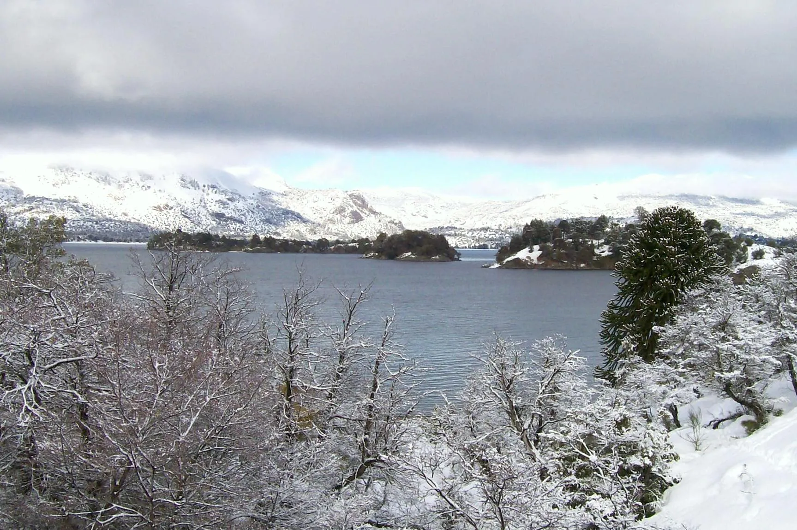

Villa Pehuenia y Moquehue
En invierno, con nieve. Paramos siempre en el mismo hotel de Moquehue, al lado del río, donde todo lo que se come se produce ahí. El dueño es docente, recorrió las comunidades mapuches y muestra lugares que el turista común no ve.
Varios días · en caravana o en minibús